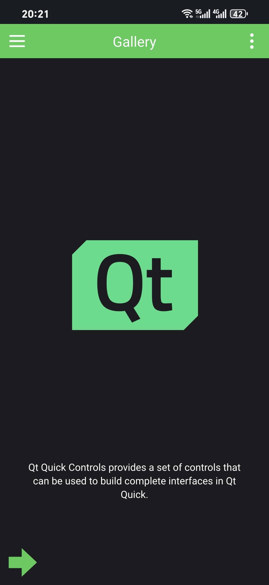

MAC上基于QT6配置安卓开发环境
MAC上基于QT6配置安卓开发环境
配置Android环境
也可以通过Android Studio来配置。好处是可以用GUI，但是占用空间大。
配置jdk
这里用brew直接下载
1 | brew install openjdk@17 |
注意对于 Apple Silicon，brew下载后jdk默认路径是
1 | /opt/homebrew/opt/openjdk@17 |
后面会用到这个路径，至于设置环境变量，将以下配置到bashrc
1 | export JAVA_HOME="/opt/homebrew/opt/openjdk@17" # 对于 Apple Silicon |
通过creator配置Android环境
在网络条件允许的情况下，可以通过creator全自动完成安装。
进入creator中的设备-Android。

在creator中设置jdk位置，将路劲设置为之前brew安装的jdk路径，然后点击下面的设置sdk。creator会检测并开始自动补全缺失的软件包。

按照引导进行即可。

设置后即为


这里需要注意jdk版本与cmdline tool的对应。creator实际上是通过cmdline tool来控制安卓sdk的，但是cmdline tool高度依赖于jdk版本，如果你版本不正确，将可能会出现这类问题。
在这里creator也顺带将Openssl配置完成了
采用sdkmanager命令行工具手动配置
如果creator安装出错，也可以通过手动安装的方式完成安装。这里仅仅做个引路，官方写的已经很好了。访问Android官方，这里仅下载命令行工具包

配置命令行工具的详细操作参见sdkmanager | Android Studio | Android Developers
主要步骤如下：

我这里设置的路径为
1 | /Users/wadaxiyang/Library/Android/sdk |

通过类似命令就可以下载对应的platform-tools等等，实际上和creator做的一样。
1 | ./sdkmanager "platform-tools" "platforms;android-33" --proxy_host=127.0.0.1 --proxy_port=9908 --proxy=http |
配置Android虚拟机
实际上creator也能够直接配置Android虚拟机，进入

安装镜像


选择

启动AVD即可

部署到AVD
QT for Android的安装过程省略。可以参考macOS 安装最新 qt6_qt6 for mac-CSDN博客，写的很好。
使用官方示例进行检验


设置模拟器，注意这里要先启动AVD。

运行结果

部署到真机
通过USB真机调试与AVD大同小异，这里主要指一下为apk添加签名，以直接安装。

按提示，创建并选择即可。

之后build即可在对应目录下生成apk。注意我这里给出的是release版本。

效果
